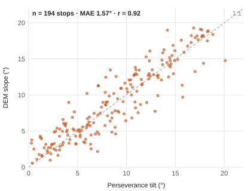
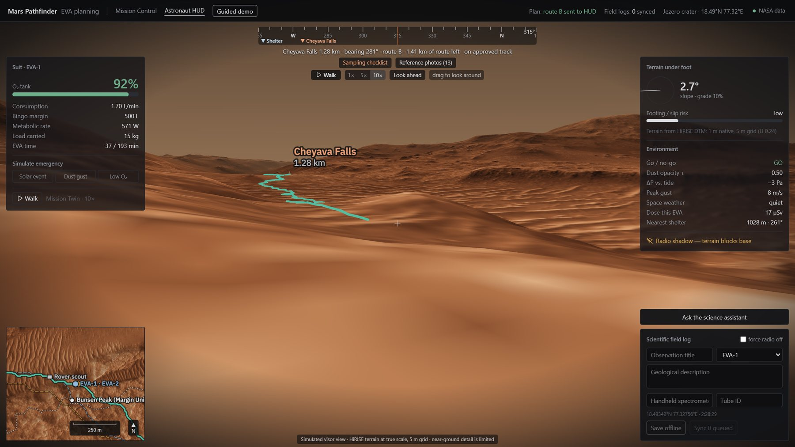

| Project | Mars Pathfinder |
| Team | [Team name / Nombre del equipo] |
| Members | [Members / Integrantes] |
| Official challenge | Interplanetary survival guide: Map of Mars |
| Solution | Web application with two synchronised views: Mission Control (planning) and Astronaut HUD (helmet visor) |
| Links | App: https://mars-beta-fawn.vercel.app Code: https://github.com/BobDylan8597/Mars Video: [Video link / Enlace al video] |
Mars Pathfinder turns NASA orbital and rover data into a walkable plan for a ~3 km EVA at Jezero crater, and into a helmet visor that guides the crew on the surface. On the USGS 1 m HiRISE terrain model it computes slopes, traversable ground, three alternative routes with A*, oxygen use and the point of no return (Bingo O₂), radio coverage and topographic shelters. Its main result is verifiable: its computed slope matches the tilt Perseverance itself recorded at 194 stops (mean error 1.57°, r = 0.92).
Existing tools (Mars Trek, USGS maps) combine layers at regional or global scale. An astronaut in a pressurised suit, carrying load with limited oxygen, needs metre-scale decisions: which slope can I climb? do I have the oxygen to return? where do I lose radio? where do I shelter from a solar event?
General objective: build a hyperlocal tool that joins data from several NASA missions to plan and carry out a safe, scientifically productive EVA.
Mission Control (planning in the habitat): 2D and 3D map of the 4×4 km area with imagery, topography, slope, roughness, traversability, uncertainty, radio shadow and shelter layers, each with a provenance badge; science targets ranked by an adjustable Science Opportunity Index (SOI); three routes (shortest, safest, max science) with elevation, slope and O₂ profile; EVA configurator (load, speed, maximum slope, tank); pre-EVA weather rules; and a Mission Twin that simulates the walk.
Astronaut HUD (helmet visor): the real terrain at true scale seen from 1.7 m at the astronaut's position, with route, target and shelters overlaid in place; a compass that follows the gaze; O₂, Bingo margin, inclinometer and alerts; real Perseverance photos as reference on arrival; a science field log that stores entries on the suit when there is no radio and syncs when line of sight returns; emergency simulation with automatic diversion; and an offline science assistant that separates measured data, derived products and interpretation.
What sets it apart: every on-screen number carries its source or a model/assumption label; slope is validated against the rover; and planning (Mission Control) and execution (HUD) share the same state, even offline.
| Data | Source | Used for |
|---|---|---|
| HiRISE digital terrain model, 1 m | USGS, Mars 2020 TRN, DOI 10.5066/P9REJ9JN (CC0) | Topography, slope, roughness, routes, line of sight, shelters, 3D |
| HiRISE orthomosaic, 25 cm | USGS, DOI 10.5066/P9QJDP48 | Optical layer and 3D texture |
| Perseverance waypoints | NASA MMGIS (M20_waypoints.json) | Real rover traverse, target positions, tilt validation |
| Perseverance raw images | Mars 2020 raw image API (official challenge resource) | Reference photos at each target |
| Curiosity waypoints and images | NASA MMGIS (MSL) + MSL raw image API | Mount Sharp boxwork dossier (2025) |
| Cheyava Falls findings | Hurowitz et al., Nature 645, 332 (2025) | Science dossier |
| Bunsen Peak findings | NASA, April 2024 | Science dossier |
| Surface radiation | Curiosity RAD, Hassler et al., Science 343 (2014) | Dose budget (measured at Gale) |
| Mars Trek, USGS, Curiosity path, Worldview | Official challenge resources | Design reference and context; Worldview for the Earth analogue |
Data preparation. The USGS DTM (1.8 GB) and orthomosaic (7.4 GB) are read remotely only over the work window and resampled to 5 m cells (800×800 = 640,000 cells), correcting the equirectangular scale at 18.5° latitude. A 10 km context area at 20 m is used for display only.
Methods. Slope by Horn's method; roughness as the residual of a 3×3 fitted plane; uncertainty index U from resolution, gaps and resampling (no-data cells are never classified as safe); routes with A* on a multi-criteria cost function, verified with Dijkstra; metabolic cost with the Pandolf (1977) equation scaled to Mars gravity (3.721 m/s², basal term not scaled) and O₂ at 20.1 kJ per litre; Bingo O₂ = O₂ remaining ≤ 1.2 × O₂ needed to return; radio line of sight by ray tracing with Mars curvature; shelters by fraction of sky blocked in 16 directions; and transparent weather rules (not a forecast).
Declared assumptions: suit mass, pressurised-suit penalty and tank size; SOI scores assigned by the team; RAD dose measured at Gale and applied to Jezero; operations base chosen by the team on the DTM (not a NASA site); approximate colour tint (the HiRISE RED band is monochrome); 3D vertical exaggeration shown on screen.

Terrain validation. At 194 real Perseverance stops (sols 909–1343) we compared the slope computed on the DTM with the tilt the rover itself measured: mean error 1.57°, correlation r = 0.92. Rover tilt also reflects rocks under the wheels, so perfect agreement is not expected. Elevation agrees to centimetres, but that figure is not independent because rover localisation relies on the same HiRISE terrain.
Routes to Cheyava Falls (default scenario: 15 kg load, 0.8 m/s, 60 min science, 15° maximum slope, 600 L usable O₂ — assumption):
| Route | Distance (km) | Max slope | Mean slope | Ascent (m) | Walk out (min) | O₂ full EVA (L) | O₂ left at base |
|---|---|---|---|---|---|---|---|
| A · Shortest | 3.00 | 15.0° | 6.2° | 136 | 63 | 219 (37%) | 63% |
| B · Safest | 3.19 | 12.9° | 3.5° | 113 | 67 | 220 (37%) | 63% |
| C · Max science (via Bunsen Peak) | 3.07 | 12.9° | 4.1° | 119 | 64 | 217 (36%) | 64% |
The safe route is only 6% longer and lowers mean slope from 6.2° to 3.5° for almost the same oxygen: planning improves safety at no O₂ cost. A* found the same optimal cost as Dijkstra while expanding 5× fewer nodes on route A (74,408 vs. 380,593).





Limitations and future work: a 4×4 km area; boulders smaller than the 5 m cell are not detected (next step: detection on the 25 cm orthoimage); THEMIS and USGS geology layers not loaded; metabolic model not validated for pressurised suits; suit telemetry and weather simulated; no routes at Gale (no DTM loaded); generalise to any site with a HiRISE DTM.
Tools: Next.js, React, TypeScript, Tailwind CSS, Three.js, Recharts, Zustand, Vitest; Python (NumPy, rasterio/GDAL, Pillow); Vercel; GitHub.
Use of artificial intelligence: the team used Claude Code (Anthropic) as an assistant to design, write code, check data sources and draft documentation. Decisions, data verification and results were reviewed by the team. The application does not run any AI model: the science assistant is a curated knowledge base that works offline.
Imagery and data: NASA/JPL-Caltech, University of Arizona (HiRISE), USGS Astrogeology, MSSS. NASA does not endorse this project.